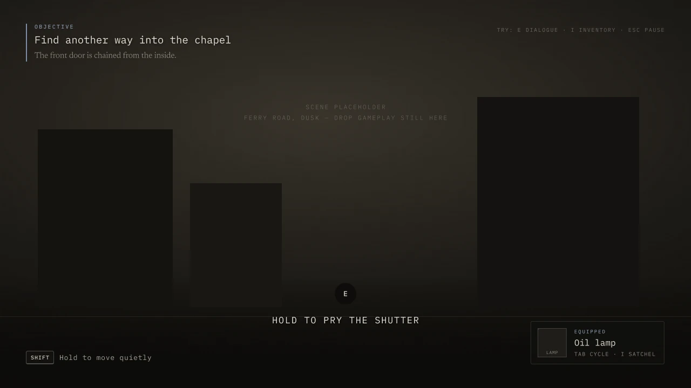
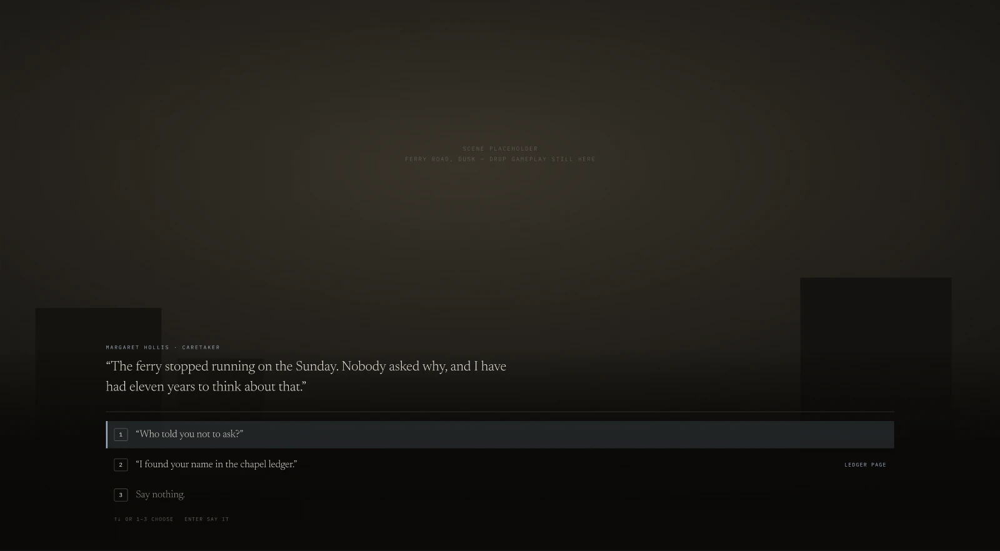
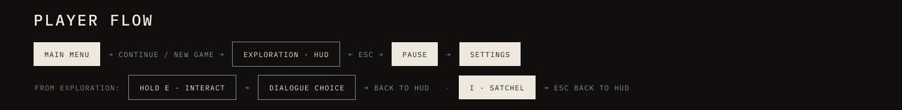
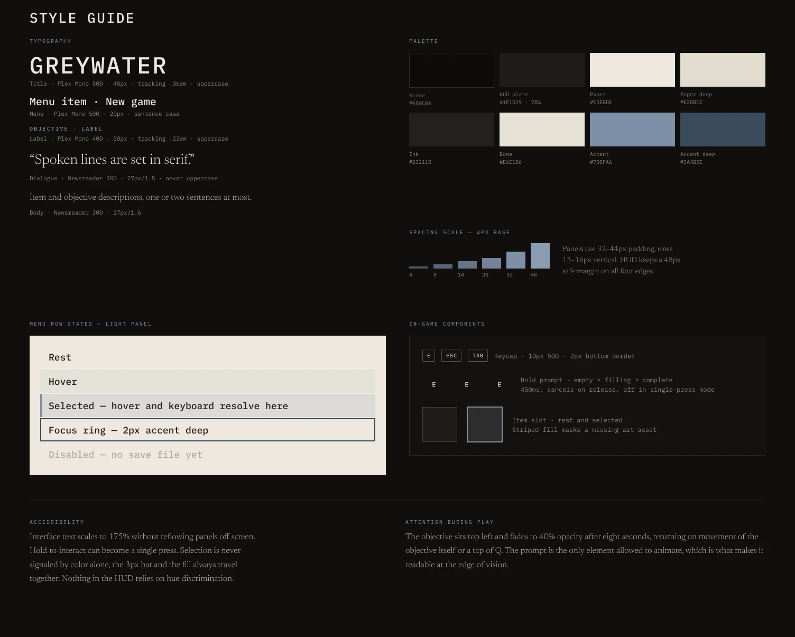

Chapter 03: Greywater
UI/UX for a first-person narrative exploration game set in an abandoned town that fell off the map in the 1970s. A complete interface system: title menu, exploration HUD, dialogue and a style guide built to keep the town, not the UI, at the centre of the screen.
- Role
- UI/UX design
- Tools
- Figma
- Platform
- PC, keyboard and mouse
- Scope
- Menus, HUD, dialogue, style guide
Try the title menu
Hover, or use ↑ ↓ and Enter
Rebuilt in HTML and CSS from the Figma component, so hover and keyboard both resolve to the same selected state.
Screen Guide: Exploration HUD
Everything inside a 48px safe margin

- 1. Objective
Top left, then fades to 40% after eight seconds. It returns when the objective changes or the player taps Q.
- 2. Hold prompt
The only element allowed to animate, which is what makes it readable at the edge of vision.
- 3. Equipped item
The oil lamp, with Tab to cycle and I for the satchel.
- 4. Movement hint
A keycap and a short verb. Shift to move quietly.
The exploration HUD over a placeholder scene. Hover or focus an entry to find it on the screen.
Three rules for the whole interface
- Darker while playing, lighter at rest. Gameplay overlays are near black and translucent so the town stays the brightest thing on screen. Menus, inventory and pause are opaque paper panels that slide over a dimmed scene, a clear signal that the world has stopped.
- Blue means "this is what your next key affects." Slate blue marks the current selection and nothing decorative uses it, so the eye never has to search.
- Few keys, simple controls. Arrows or WS to navigate, Enter to select, E to interact, I for the satchel, Esc to back out, 1 through 6 for quick select.
A HUD that gets out of the way
The objective sits top left and fades to 40% opacity after eight seconds, returning when the objective changes or the player taps Q. The interaction prompt is the only element allowed to animate, which is exactly what makes it readable at the edge of vision.
Hold prompts fill over 450ms, cancel on release, and can be switched to a single press for players who need it.

Dialogue with consequences you can see
Spoken lines are set in Newsreader, a serif, so voice always reads differently from interface text. Choices are numbered for one-key answers, and a choice unlocked by something in the satchel carries a small tag, here "Ledger page," so the player knows why it is available.
Player flow
Every state is reachable in one or two keys, and Esc always takes the player one step back toward exploration.


Accessibility built in
- Interface text scales to 175% without pushing panels off screen.
- Selection is never colour alone: the 3px bar and the fill always travel together.
- Nothing in the HUD depends on telling hues apart.
- Hold-to-interact can become a single press.